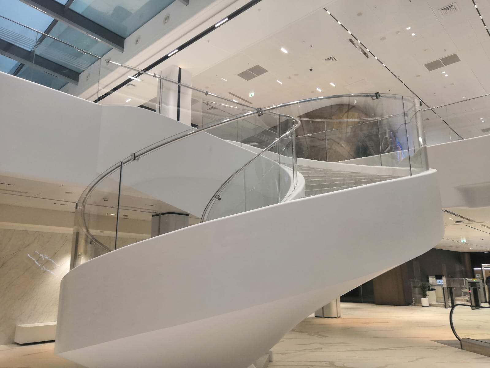
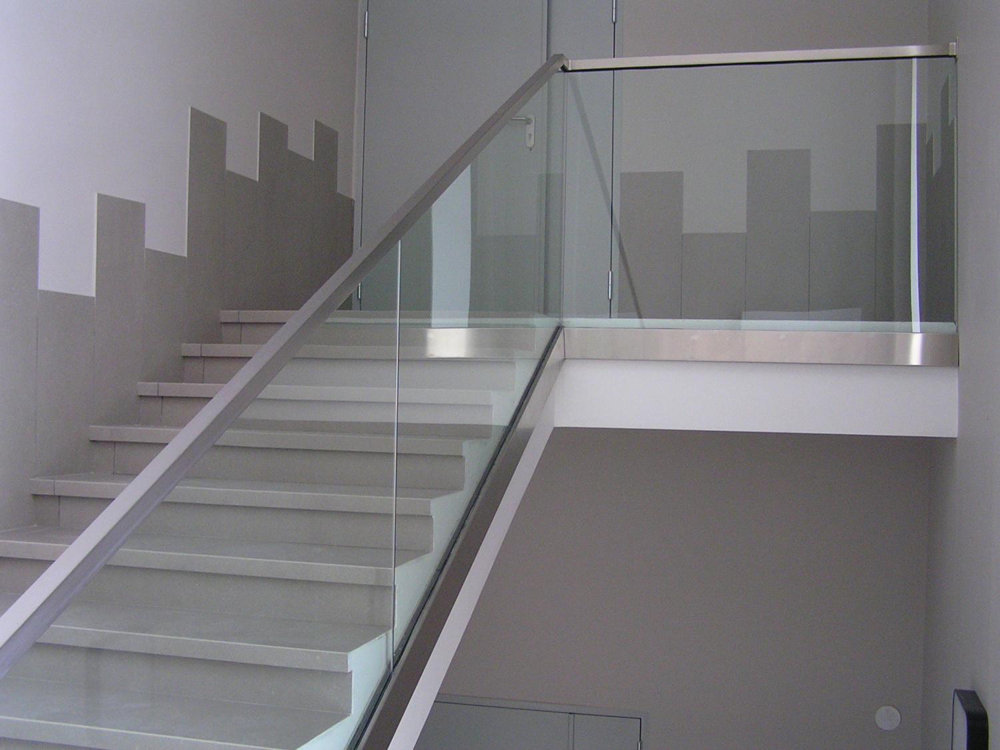
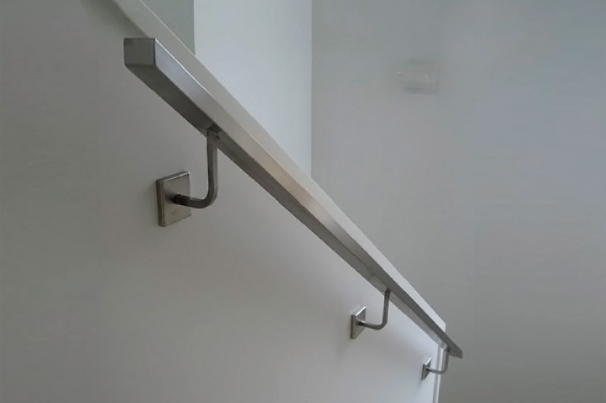

Стеклянные ограждения
Ограждения лестниц, террас, балконов и входных групп из закалённого стекла. Лёгкие, безопасные и долговечные конструкции, которые не загораживают вид.
Ограждения лестниц, террас, балконов и входных групп из закалённого стекла. Лёгкие, безопасные и долговечные конструкции, которые не загораживают вид.
Стеклянные ограждения сохраняют ощущение открытого пространства и подходят как для интерьеров, так и для улицы.




Подберём систему крепления и тип стекла под ваш объект, рассчитаем стоимость и сроки.
Заказать расчёт